flowchart TD
classDef header fill:#2E86AB,stroke:#1A5A73,color:white,stroke-width:2px
classDef subheader fill:#A23B72,stroke:#6D2143,color:white,stroke-width:2px
classDef item fill:#F18F01,stroke:#B86E00,color:black,stroke-width:2px
classDef subitem fill:#C73E1D,stroke:#8C2C15,color:white,stroke-width:2px
classDef topic fill:#6A994E,stroke:#4A6B36,color:white,stroke-width:2px
A[Compuestos químicos] --> B[Clasificación]
B --> C[Inorgánicos]
B --> D[Orgánicos]
A --> E[Posibilidad de formación]
C --> F[Evidencias de cambios químicos]
D --> F
F --> G[Síntesis y descomposición de compuestos químicos]
G --> H[Leyes ponderales]
E --> I[Tipos de reacciones químicas]
I --> J[Por las sustancias que intervienen]
I --> K[Por el intercambio energético]
I --> L[Por su posibilidad de reversión]
I --> M[Por su velocidad]
J --> N[Ecuaciones químicas]
K --> N
L --> N
M --> N
N --> O[Fórmulas]
N --> P[Símbolos]
class A header
class B,E subheader
class C,D,F,G,H,N topic
class I item
class J,K,L,M subitem
class O,P subitem
Formación de compuestos químicos: posibilidad de formación
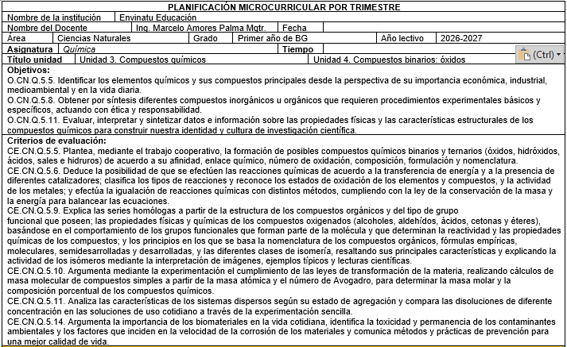
NotaCompletar esta clase te permitirá:
CN.Q.5.1.12. Deducir y predecir la posibilidad de formación de compuestos químicos, con base en el estado natural de los elementos, su estructura electrónica y su ubicación en la tabla periódica.
NotaCompletar esta clase te permitirá:
CN.Q.5.2.1. Analizar y clasificar los compuestos químicos binarios que tienen posibilidad de formarse entre dos elementos de acuerdo a su ubicación en la tabla periódica, su estructura electrónica y sus posibles grados de oxidación para deducir las fórmulas que los representan.

Imagina que tienes un conjunto de piezas de LEGO de distintos colores y formas. Cada pieza por sí sola tiene propiedades propias: tamaño, color, textura. Pero cuando las unes siguiendo ciertas reglas, construyes algo completamente nuevo: un castillo, un vehículo o una nave espacial. En química sucede algo parecido. Cuando los elementos se combinan para formar compuestos, dejan de comportarse como sustancias individuales y surge una nueva sustancia con propiedades propias, distintas a las de sus “piezas” originales.
Ahora, reflexiona: si los elementos pueden transformarse al combinarse, ¿qué diferencia hay entre un compuesto inorgánico y uno orgánico? ¿Qué propiedades nuevas emergen? ¿Y tú, de qué manera eres diferente de tus progenitores, combinando sus características únicas? Este cuestionamiento crea un pequeño desequilibrio cognitivo que nos impulsa a explorar, observar y deducir, justo como hacen los químicos al estudiar la formación de compuestos.
Absolutamente todos los cuerpos que conocemos están constituidos por átomos entrelazados, formando moléculas que al mismo tiempo se atraen o se repelen, que absorben y emiten energía, mostrándose de múltiples colores y presentando realidades sólidas, líquidas o gaseosas.
Si la estructura de los átomos nos proporciona algo más de un centenar de elementos, la combinación que resulta de su unión nos da probabilidades infinitas de nuevas sustancias, y otorga al ser humano la posibilidad de ser un creador de ellas.

Los compuestos químicos son estructuras materiales que se forman por la unión de átomos de diferentes elementos. A estas estructuras las conocemos como moléculas. Todos los elementos químicos están en posibilidad de unirse con otros elementos para formar sustancias compuestas. Pero esa posibilidad se da en función de su estructura electrónica y las propiedades periódicas que presentan los elementos. Es así que si damos un vistazo a la tabla periódica, observaremos el siguiente comportamiento de los elementos para formar compuestos: Los gases nobles, por presentar niveles de energía completos, casi nunca forman compuestos.
Los halógenos, oxígeno y nitrógeno, por poseer electronegatividades altas, son los no metales más reactivos; por lo tanto, tienden a formar infinidad de compuestos.
Los alcalinos, por su alto potencial de ionización, son los metales que nunca estarán libres en la naturaleza, pues siempre están formando parte de un compuesto.
Hacia los límites del carácter metálico y no metálico, los elementos tienden a formar compuestos covalentes y menos polares.
En el centro de la tabla encontramos los metales preciosos que, a pesar de formar compuestos químicos, tienen preferencia por estar libres.
Funciones químicas inorgánicas
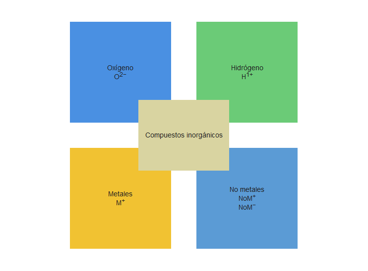
Clasificación de los compuestos inorgánicos
Dependiendo del número de elementos que se encuentran en un compuesto se los clasifica en:
Binarios
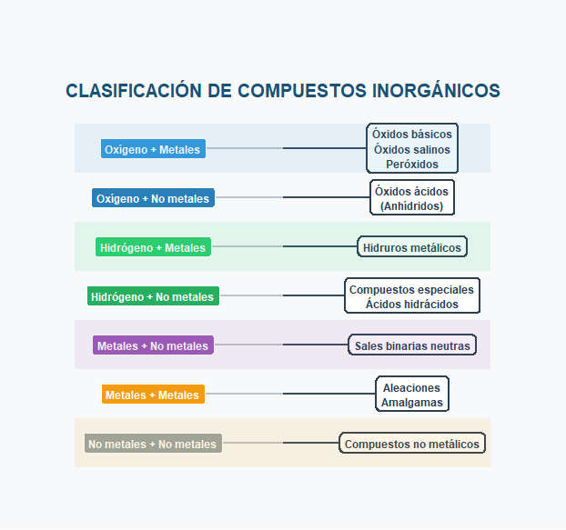
Warning: package 'ggplot2' was built under R version 4.4.3Warning: package 'tibble' was built under R version 4.4.3Warning: package 'tidyr' was built under R version 4.4.3Warning: package 'readr' was built under R version 4.4.3Warning: package 'purrr' was built under R version 4.4.3Warning: package 'stringr' was built under R version 4.4.3Warning: package 'forcats' was built under R version 4.4.3Warning: package 'lubridate' was built under R version 4.4.3── Attaching core tidyverse packages ──────────────────────── tidyverse 2.0.0 ──
✔ dplyr 1.1.4 ✔ readr 2.1.6
✔ forcats 1.0.1 ✔ stringr 1.6.0
✔ ggplot2 4.0.1 ✔ tibble 3.3.0
✔ lubridate 1.9.4 ✔ tidyr 1.3.2
✔ purrr 1.2.0
── Conflicts ────────────────────────────────────────── tidyverse_conflicts() ──
✖ dplyr::filter() masks stats::filter()
✖ dplyr::lag() masks stats::lag()
ℹ Use the conflicted package (<http://conflicted.r-lib.org/>) to force all conflicts to become errorsWarning: package 'ggtext' was built under R version 4.4.3# Crear datos ordenados por primer elemento
combinaciones <- tibble(
combinacion = c(
"Oxígeno + Metales",
"Oxígeno + No metales",
"Hidrógeno + Metales",
"Hidrógeno + No metales",
"Metales + No metales",
"Metales + Metales",
"No metales + No metales"
),
productos = c(
"Óxidos básicos\nÓxidos salinos\nPeróxidos",
"Óxidos ácidos\n(Anhídridos)",
"Hidruros metálicos",
"Compuestos especiales\nÁcidos hidrácidos",
"Sales binarias neutras",
"Aleaciones\nAmalgamas",
"Compuestos no metálicos"
),
grupo = c("Óxidos metálicos", "Óxidos no metálicos", "Hidruros", "Ácidos",
"Sales", "Aleaciones", "Compuestos diversos"),
color_grupo = c("#3498db", "#2980b9", "#2ecc71", "#27ae60",
"#9b59b6", "#f39c12", "#95a5a6"),
categoria = c("Oxígeno", "Oxígeno", "Hidrógeno", "Hidrógeno",
"Metales", "Metales", "No metales"),
orden = 1:7
)
# Posiciones verticales ordenadas
combinaciones$y_pos <- rev(seq(1, nrow(combinaciones))) # De arriba a abajo
# Crear el cuadro científico - VERSIÓN VERTICAL ORDENADA
ggplot(combinaciones, aes(y = y_pos)) +
# Línea de conexión
geom_segment(aes(x = 1, xend = 2, y = y_pos, yend = y_pos),
color = "#bdc3c7", size = 1, linetype = "solid") +
# Flechas
geom_segment(aes(x = 1.5, xend = 2, y = y_pos, yend = y_pos),
arrow = arrow(length = unit(0.2, "cm"), type = "closed"),
size = 1, color = "#34495e") +
# Punto de inicio
geom_point(aes(x = 1), size = 4, color = combinaciones$color_grupo) +
# Combinaciones (lado izquierdo)
geom_label(aes(x = 1, label = combinacion),
fill = combinaciones$color_grupo, color = "white",
size = 4.0, label.padding = unit(0.4, "lines"),
fontface = "bold", hjust = 0.5) +
# Productos (lado derecho)
geom_label(aes(x = 2, label = productos),
fill = "white", color = "#2c3e50",
size = 4.0, label.padding = unit(0.4, "lines"),
fontface = "bold", hjust = 0.5,
label.size = 0.8, label.r = unit(0.3, "lines")) +
# Título
annotate("text", x = 1.5, y = max(combinaciones$y_pos) + 1.2,
label = "CLASIFICACIÓN DE COMPUESTOS INORGÁNICOS",
size = 6.5, fontface = "bold", color = "#1a5276") +
# Subtítulo
annotate("text", x = 1.5, y = max(combinaciones$y_pos) + 0.8,
label = " ",
size = 4.5, color = "#5d6d7e") +
# Separadores de categorías
# Oxígeno
annotate("rect", xmin = 0.7, xmax = 2.3,
ymin = 6.5, ymax = 7.5,
fill = "#3498db", alpha = 0.1) +
annotate("text", x = 0.8, y = 7, label = " ",
size = 4, fontface = "bold", color = "#2980b9", hjust = 0) +
# Hidrógeno
annotate("rect", xmin = 0.7, xmax = 2.3,
ymin = 4.5, ymax = 5.5,
fill = "#2ecc71", alpha = 0.1) +
annotate("text", x = 0.8, y = 5, label = " ",
size = 4, fontface = "bold", color = "#27ae60", hjust = 0) +
# Metales
annotate("rect", xmin = 0.7, xmax = 2.3,
ymin = 2.5, ymax = 3.5,
fill = "#9b59b6", alpha = 0.1) +
annotate("text", x = 0.8, y = 3, label = " ",
size = 4, fontface = "bold", color = "#8e44ad", hjust = 0) +
# No metales
annotate("rect", xmin = 0.7, xmax = 2.3,
ymin = 0.5, ymax = 1.5,
fill = "#f39c12", alpha = 0.1) +
annotate("text", x = 0.8, y = 1, label = " ",
size = 4, fontface = "bold", color = "#d35400", hjust = 0) +
# Configuración del tema
theme_void() +
theme(
plot.background = element_rect(fill = "#f8f9fa", color = NA),
plot.margin = margin(2, 2, 1, 2, "cm"),
legend.position = "none"
) +
coord_cartesian(xlim = c(0.7, 2.3),
ylim = c(0.2, max(combinaciones$y_pos) + 1.5)) +
labs(x = NULL, y = NULL)Warning: Using `size` aesthetic for lines was deprecated in ggplot2 3.4.0.
ℹ Please use `linewidth` instead.Warning: The `label.size` argument of `geom_label()` is deprecated as of ggplot2 3.5.0.
ℹ Please use the `linewidth` argument instead.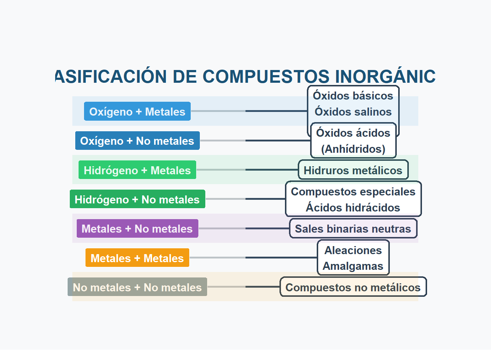
# Versión de consola ordenada
cat("\n\n--- VERSIÓN ORDENADA POR ELEMENTO PRINCIPAL ---\n\n")
--- VERSIÓN ORDENADA POR ELEMENTO PRINCIPAL ---cat("═══════════════════════════════════════════════════════════════════════\n")═══════════════════════════════════════════════════════════════════════cat(" CON OXÍGENO\n") CON OXÍGENOcat("═══════════════════════════════════════════════════════════════════════\n")═══════════════════════════════════════════════════════════════════════cat("• Oxígeno + Metales → Óxidos básicos, Óxidos salinos, Peróxidos\n")• Oxígeno + Metales → Óxidos básicos, Óxidos salinos, Peróxidoscat("• Oxígeno + No metales → Óxidos ácidos (Anhídridos)\n\n")• Oxígeno + No metales → Óxidos ácidos (Anhídridos)cat("═══════════════════════════════════════════════════════════════════════\n")═══════════════════════════════════════════════════════════════════════cat(" CON HIDRÓGENO\n") CON HIDRÓGENOcat("═══════════════════════════════════════════════════════════════════════\n")═══════════════════════════════════════════════════════════════════════cat("• Hidrógeno + Metales → Hidruros metálicos\n")• Hidrógeno + Metales → Hidruros metálicoscat("• Hidrógeno + No metales → Compuestos especiales, Ácidos hidrácidos\n\n")• Hidrógeno + No metales → Compuestos especiales, Ácidos hidrácidoscat("═══════════════════════════════════════════════════════════════════════\n")═══════════════════════════════════════════════════════════════════════cat(" COMBINACIONES CON METALES\n") COMBINACIONES CON METALEScat("═══════════════════════════════════════════════════════════════════════\n")═══════════════════════════════════════════════════════════════════════cat("• Metales + No metales → Sales binarias neutras\n")• Metales + No metales → Sales binarias neutrascat("• Metales + Metales → Aleaciones, Amalgamas\n\n")• Metales + Metales → Aleaciones, Amalgamascat("═══════════════════════════════════════════════════════════════════════\n")═══════════════════════════════════════════════════════════════════════cat(" COMBINACIONES CON NO METALES\n") COMBINACIONES CON NO METALEScat("═══════════════════════════════════════════════════════════════════════\n")═══════════════════════════════════════════════════════════════════════cat("• No metales + No metales → Compuestos no metálicos\n")• No metales + No metales → Compuestos no metálicos# Tabla resumen ordenada
cat("\n\n--- TABLA RESUMEN ORDENADA ---\n\n")
--- TABLA RESUMEN ORDENADA ---cat("┌──────────────────────────┬────────────────────────────────────────────┐\n")┌──────────────────────────┬────────────────────────────────────────────┐cat("│ Elemento Principal │ Combinación │ Productos │\n")│ Elemento Principal │ Combinación │ Productos │cat("├──────────────────────────┼──────────────────────────┼────────────────┤\n")├──────────────────────────┼──────────────────────────┼────────────────┤# Oxígeno
cat("│ │ Oxígeno + Metales │ Óxidos básicos │\n")│ │ Oxígeno + Metales │ Óxidos básicos │cat("│ OXÍGENO │ Oxígeno + No metales │ Óxidos ácidos │\n")│ OXÍGENO │ Oxígeno + No metales │ Óxidos ácidos │cat("├──────────────────────────┼──────────────────────────┼────────────────┤\n")├──────────────────────────┼──────────────────────────┼────────────────┤# Hidrógeno
cat("│ │ Hidrógeno + Metales │ Hidruros │\n")│ │ Hidrógeno + Metales │ Hidruros │cat("│ HIDRÓGENO │ Hidrógeno + No metales │ Ácidos hidr. │\n")│ HIDRÓGENO │ Hidrógeno + No metales │ Ácidos hidr. │cat("├──────────────────────────┼──────────────────────────┼────────────────┤\n")├──────────────────────────┼──────────────────────────┼────────────────┤# Metales
cat("│ │ Metales + No metales │ Sales binarias │\n")│ │ Metales + No metales │ Sales binarias │cat("│ METALES │ Metales + Metales │ Aleaciones │\n")│ METALES │ Metales + Metales │ Aleaciones │cat("├──────────────────────────┼──────────────────────────┼────────────────┤\n")├──────────────────────────┼──────────────────────────┼────────────────┤# No metales
cat("│ │ No metales + No metales │ Comp. diversos │\n")│ │ No metales + No metales │ Comp. diversos │cat("│ NO METALES │ │ │\n")│ NO METALES │ │ │cat("└──────────────────────────┴──────────────────────────┴────────────────┘\n")└──────────────────────────┴──────────────────────────┴────────────────┘Oxígeno + Metales
Óxidos básicos
Óxidos salinos
Peróxidos
Oxígeno + No metales
Óxidos ácidos (anhídridos)
Hidrógeno + Metales
Hidruros metálicos
Hidrógeno + No metales
Compuestos especiales
Ácidos hidrácidos
Metales + No metales
Sales binarias neutras
Metales + Metales
Aleaciones
Amalgamas
No metales + No metales
Compuestos no metálicos
Ternarios
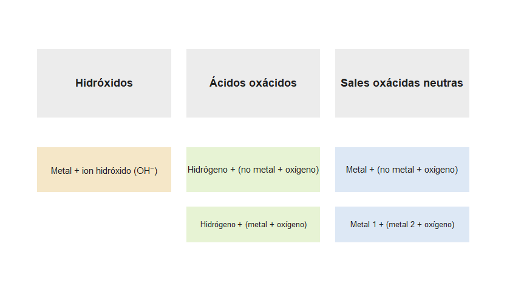
Hidróxidos
Metal + OH (hidroxilo)
Ácidos oxácidos
Hidrógeno + (No metal + Oxígeno)
Hidrógeno + (Metal + Oxígeno)
Sales oxácidas neutras
Metal 1 + (Metal 2 + Oxígeno)
Metal + (No metal + Oxígeno)
Cuaternarios
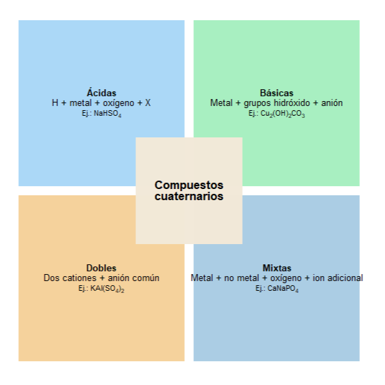
Sal oxisal
Ácida
Básica
Doble
Mixta
A cada uno de estos tipos de compuestos se los conoce como función química, es decir, grupos de sustancias que comparten estructura, características y propiedades semejantes.
Funciones químicas orgánicas
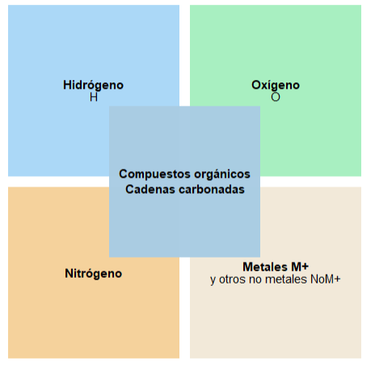
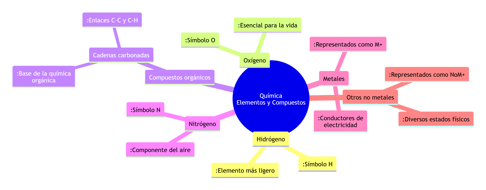
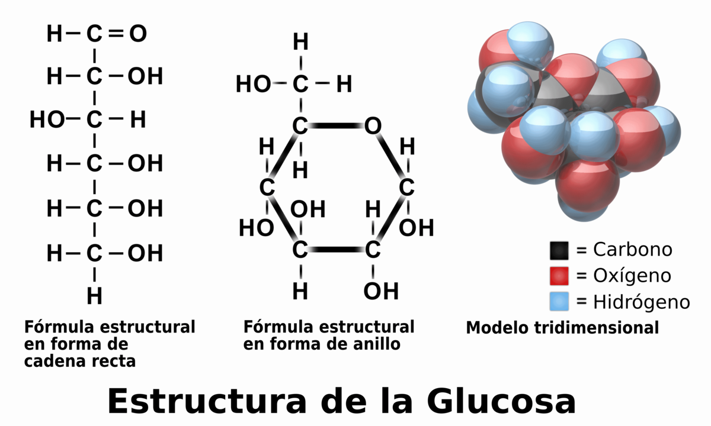
mindmap
root((Química<br/>Elementos y Compuestos))
Hidrógeno
:Símbolo H
:Elemento más ligero
Oxígeno
:Símbolo O
:Esencial para la vida
Compuestos orgánicos
Cadenas carbonadas
:Base de la química orgánica
:Enlaces C-C y C-H
Nitrógeno
:Símbolo N
:Componente del aire
Metales
:Representados como M+
:Conductores de electricidad
Otros no metales
:Representados como NoM+
:Diversos estados físicos
Clasificación de los compuestos orgánicos
En las cadenas carbonadas se puede encontrar un elemento o grupo de elementos que da la característica a la función orgánica. Es el grupo funcional y es en base a él que a los compuestos orgánicos se los clasifica en:
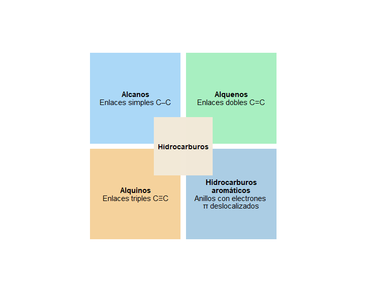
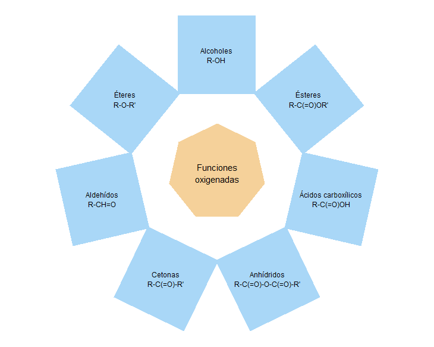
library(ggplot2)
library(dplyr)
library(purrr)
# Colores
col_central <- "#F5D19A" # Triángulo central
col_nitrogenadas <- "#A9D7F7" # Cuadrados externos
# Función para crear polígonos regulares
crear_poligono <- function(cx, cy, radio, lados) {
angulos <- seq(0, 2*pi, length.out = lados + 1)
data.frame(
x = cx + radio * cos(angulos),
y = cy + radio * sin(angulos)
)
}
# Triángulo central
central <- crear_poligono(0, 0, 1, 3) # radio 1, 3 lados
# Calcular ángulo de la base y rotar para horizontal
x1 <- central$x[1]; y1 <- central$y[1]
x2 <- central$x[2]; y2 <- central$y[2]
angulo_base <- atan2(y2 - y1, x2 - x1)
rotar <- function(df, ang) {
rot <- matrix(c(cos(ang), -sin(ang), sin(ang), cos(ang)), ncol = 2)
coords <- as.matrix(df[, c("x","y")]) %*% rot
df$x <- coords[,1]
df$y <- coords[,2]
df
}
central <- rotar(central, -angulo_base)
# Función para crear un cuadrado rotado
crear_cuadrado <- function(cx, cy, lado, angulo) {
pts <- data.frame(
x = c(-1, 1, 1, -1) * lado/1,
y = c(-1, -1, 1, 1) * lado/1
)
rot <- matrix(c(cos(angulo), -sin(angulo), sin(angulo), cos(angulo)), ncol = 2)
coords <- as.matrix(pts) %*% rot
data.frame(x = coords[,1] + cx, y = coords[,2] + cy)
}
# Ángulos de los lados del triángulo
lados <- nrow(central) - 1
angulos_lados <- map_dbl(1:lados, function(i) {
atan2(central$y[i+1] - central$y[i], central$x[i+1] - central$x[i])
})
# Centros de cuadrados externos
distancia <- 2.4
centros <- map2(1:lados, angulos_lados, function(i, ang) {
ang_perp <- ang + pi/2
data.frame(cx = distancia * cos(ang_perp), cy = distancia * sin(ang_perp))
}) %>% bind_rows()
# Crear cuadrados
lado_cuadrado <- 1.2
cuadrados <- map2(split(centros, seq_len(nrow(centros))), angulos_lados,
~ crear_cuadrado(.x$cx, .x$cy, lado_cuadrado, .y))
# Nombres y fórmulas de funciones nitrogenadas (desarrolladas)
nombres <- c("Aminas", "Amidas", "Nitrilos")
grupos <- c("R-NH2", "R-C(=O)NH2", "R-C≡N")
# Etiquetas combinadas con salto de línea
etiquetas <- paste(nombres, grupos, sep = "\n")
# Gráfico final
ggplot() +
# Triángulo central
geom_polygon(data = central, aes(x, y), fill = col_central) +
geom_text(data = data.frame(x = 0, y = 0, label = "Funciones\nNitrogenadas"),
aes(x, y, label = label), size = 5) +
# Cuadrados y etiquetas internas
map2(cuadrados, etiquetas, ~{
list(
geom_polygon(data = .x, aes(x, y), fill = col_nitrogenadas),
geom_text(data = data.frame(x = mean(.x$x), y = mean(.x$y), label = .y),
aes(x, y, label = label), size = 4)
)
}) +
coord_equal() +
theme_void()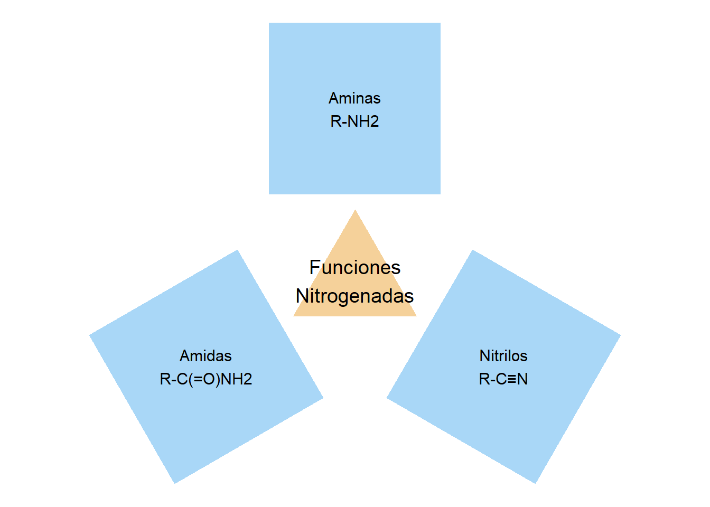
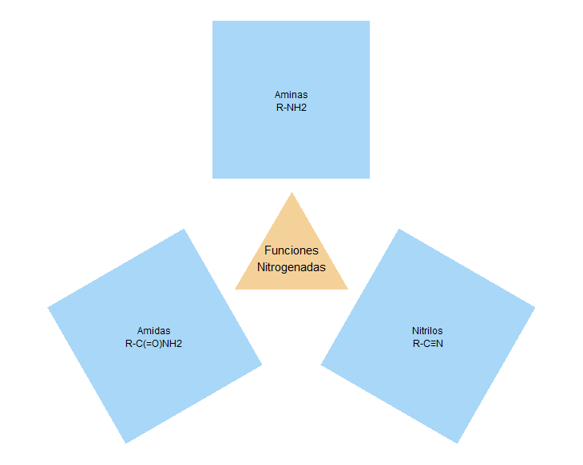
Hidrocarburos
Alcanos
Alquenos
Alquinos
Hidrocarburos aromáticos
Funciones orgánicas oxigenadas
library(ggplot2)
library(dplyr)
library(purrr)
# Colores
col_central <- "#F5D19A"
col_oxigenados <- "#A9D7F7"
# Función para crear polígonos regulares
crear_poligono <- function(cx, cy, radio, lados) {
angulos <- seq(0, 2*pi, length.out = lados + 1)
data.frame(
x = cx + radio * cos(angulos),
y = cy + radio * sin(angulos)
)
}
# Heptágono central
central <- crear_poligono(0, 0, 1, 7)
# Calcular ángulo de la base y rotar para horizontal
x1 <- central$x[1]; y1 <- central$y[1]
x2 <- central$x[2]; y2 <- central$y[2]
angulo_base <- atan2(y2 - y1, x2 - x1)
rotar <- function(df, ang) {
rot <- matrix(c(cos(ang), -sin(ang), sin(ang), cos(ang)), ncol = 2)
coords <- as.matrix(df[, c("x","y")]) %*% rot
df$x <- coords[,1]
df$y <- coords[,2]
df
}
central <- rotar(central, -angulo_base)
# Función para crear un cuadrado rotado
crear_cuadrado <- function(cx, cy, lado, angulo) {
pts <- data.frame(
x = c(-1, 1, 1, -1) * lado/1.5,
y = c(-1, -1, 1, 1) * lado/1.5
)
rot <- matrix(c(cos(angulo), -sin(angulo), sin(angulo), cos(angulo)), ncol = 2)
coords <- as.matrix(pts) %*% rot
data.frame(x = coords[,1] + cx, y = coords[,2] + cy)
}
# Ángulos de los lados del heptágono
lados <- nrow(central) - 1
angulos_lados <- map_dbl(1:lados, function(i) {
atan2(central$y[i+1] - central$y[i], central$x[i+1] - central$x[i])
})
# Centros de cuadrados externos
distancia <- 2.4
centros <- map2(1:lados, angulos_lados, function(i, ang) {
ang_perp <- ang + pi/2
data.frame(cx = distancia * cos(ang_perp), cy = distancia * sin(ang_perp))
}) %>% bind_rows()
# Crear cuadrados
lado_cuadrado <- 1.2
cuadrados <- map2(split(centros, seq_len(nrow(centros))), angulos_lados,
~ crear_cuadrado(.x$cx, .x$cy, lado_cuadrado, .y))
# Para uso en R (balance entre corrección y legibilidad):
nombres <- c("Alcoholes", "Éteres", "Aldehídos", "Cetonas",
"Anhídridos", "Ácidos carboxílicos", "Ésteres")
# Opción A (abreviada pero entendible):
#grupos <- c("R-OH", "R-O-R'", "R-CHO", "R-CO-R'",
#
# "(RCO)₂O", "R-COOH", "R-COOR'")
# Opción B (explícita, químicamente precisa):
grupos <- c("R-OH", "R-O-R'", "R-CH=O", "R-C(=O)-R'",
"R-C(=O)-O-C(=O)-R'", "R-C(=O)OH", "R-C(=O)OR'")
# Etiquetas combinadas con salto de línea
etiquetas <- paste(nombres, grupos, sep = "\n")
# Gráfico final
ggplot() +
# Heptágono central
geom_polygon(data = central, aes(x, y), fill = col_central) +
geom_text(data = data.frame(x = 0, y = 0, label = "Funciones\noxigenadas"),
aes(x, y, label = label), size = 5) +
# Cuadrados y etiquetas internas
map2(cuadrados, etiquetas, ~{
list(
geom_polygon(data = .x, aes(x, y), fill = col_oxigenados),
geom_text(data = data.frame(x = mean(.x$x), y = mean(.x$y), label = .y),
aes(x, y, label = label), size = 4)
)
}) +
coord_equal() +
theme_void()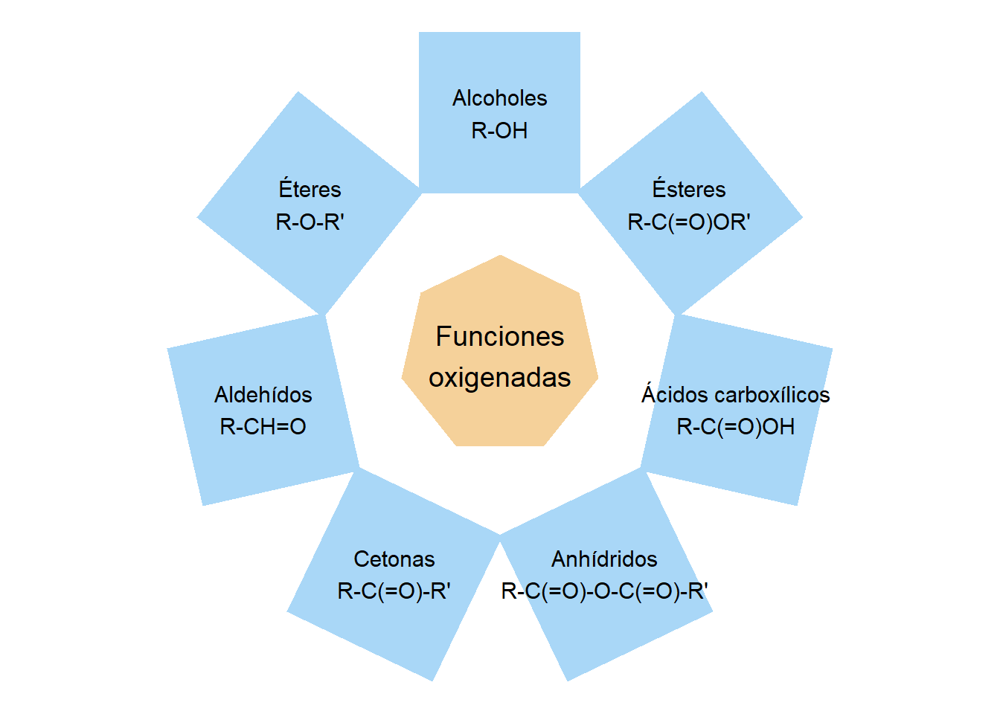
Alcoholes
Éteres
Aldehídos
Cetonas
Anhidridos
Ácidos carboxílicos y sus derivados
Ésteres
Funciones orgánicas nitrogenadas
Aminas
Amidas
Nitrilos
Los compuestos orgánicos pueden llegar a ser muy complejos y dar origen a polímeros o macromoléculas.
Ejemplos
Hidrocarburos
Polímeros de hidrocarburos
Ejemplo: el plástico
Carbohidratos
Polímeros de carbohidratos
Ejemplo: la celulosa
Aminoácidos
Polipéptidos
Ejemplo: las proteínas
Ésteres
Ésteres de glicerilo
Ejemplo: los lípidos
Hemos visto cómo los elementos pueden unirse para formar compuestos con propiedades completamente nuevas, y cómo podemos predecir su formación usando la tabla periódica y la estructura electrónica. Este conocimiento nos permite entender mejor la materia que nos rodea, desde el agua que bebemos hasta los materiales que usamos a diario.
Pero la química no termina aquí. Cada compuesto que descubres abre la puerta a otros experimentos, nuevas predicciones y aplicaciones sorprendentes en la vida cotidiana y en la ciencia. La próxima vez que observes una reacción química, pregúntate: ¿qué propiedades nuevas podrían surgir si cambiamos los elementos o sus proporciones? Mantener esta curiosidad y cuestionamiento constante es la clave para aprender, investigar y crear. La química, al igual que la vida, está llena de posibilidades por explorar.